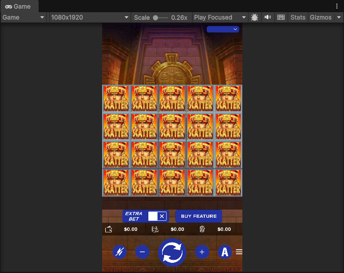
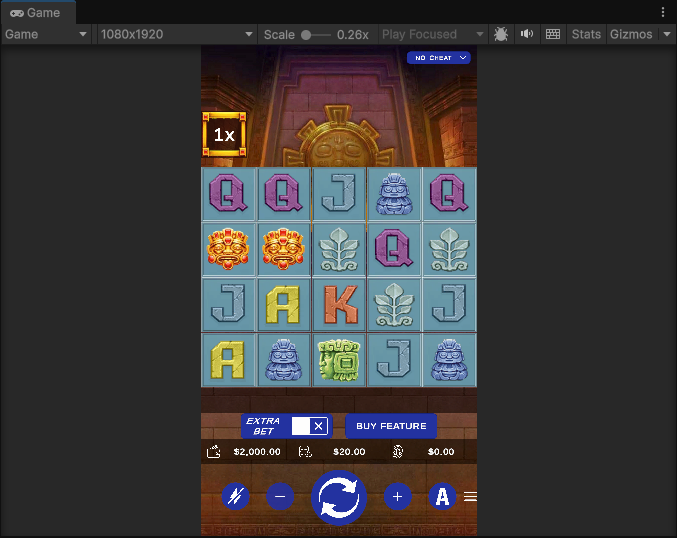
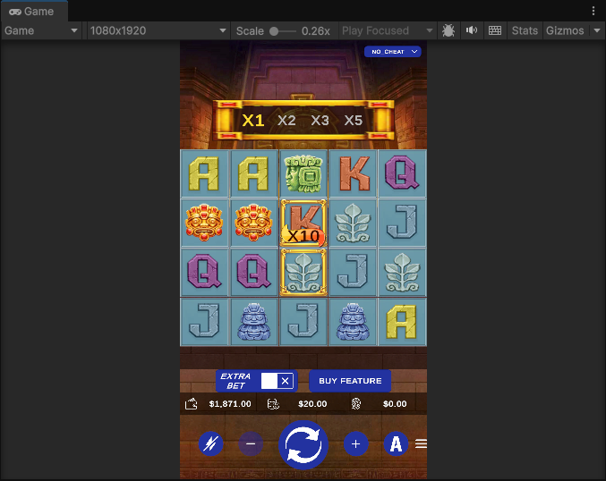

AI × UNITY 原型教學AI × UNITY PROTOTYPING GUIDE
給會用 Unity、會設計遊戲邏輯，
但還沒用過 AI 的你For people who know Unity and game logic,
but have never worked with AI
示範素材：真實的 Unity 協作對話Examples taken from a real Unity collaboration session
你已經擅長的事What you're already good at
AI 幫你補上的事What AI covers for you
你負責「決定」，AI 負責「寫出來」。You decide. AI writes it.
AI 協作 Unity 原型教學AI × Unity Prototyping Guide · 02
示範案例CASE STUDY
目標：寫好的遊戲邏輯，不改動就能在 Unity 裡跑起來，再調整畫面表現。Goal: run existing game logic in Unity without rewriting it, then tune the visuals.
1
程式碼相容 Unity，不需改動就能執行Code stays Unity-compatible and runs without changes
2
把 GameLogic、MathModel 放進既有專案，排除編譯錯誤Drop GameLogic and MathModel into the project and clear compile errors
3
動畫節奏、倍數顯示、押注數值逐項調整Animation timing, multiplier display and bet values, one by one
AI 協作 Unity 原型教學AI × Unity Prototyping Guide · 03
協作流程THE WORKFLOW
1
用白話講目的與限制Plain words: purpose and limits
2
動手前先確認架構與改動範圍Confirm design and scope before coding
3
一次只做一兩件事One or two things at a time
4
Unity 報錯就整段貼回Paste Unity errors back in full
5
用畫面語言描述節奏Describe timing in visual terms
第 3 到 5 步會反覆進行，直到原型符合你的想像。Steps 3 to 5 repeat until the prototype matches your vision.
AI 協作 Unity 原型教學AI × Unity Prototyping Guide · 04
步驟 1 · 說目標STEP 1 · STATE THE GOAL
編號的好處：AI 會照編號逐項回覆，你也能直接指定「先做第 1 點和第 2 點」。Numbers help: AI answers item by item, and you can say "do points 1 and 2 first."
不用寫規格書，也不用懂技術名詞，用你平常跟同事講需求的方式即可。No spec document or jargon needed. Talk the way you would to a teammate.
真實範例：一句話 ＋ 三個編號A real example: one sentence plus three numbers
「可以執行了，可以調整表現面了」"It runs now. We can tune the visuals."
1
SPIN 不要一直旋轉，有點擊時才轉一圈The SPIN icon shouldn't spin forever. Rotate once per click.
2
沒看到金框跟攜帶的倍數I don't see the gold frame or the carried multiplier.
3
連消倍數要顯示在畫面上，先確認是否有內建架構可以使用Show the cascade multiplier on screen. First check whether the project already has a way to do it.
AI 協作 Unity 原型教學AI × Unity Prototyping Guide · 00
步驟 2 · 問可行STEP 2 · CHECK FEASIBILITY
| 實際問過的問題Real questions asked | 目的Purpose |
|---|---|
| C# 9 框架可以直接符合 Unity 需求嗎Is C# 9 compatible with Unity as is? | 確認技術相容，再決定寫法Confirm compatibility before choosing an approach |
| 放進現有 Unity 框架，改動範圍會很大嗎If I put it into our Unity framework, will the change be large? | 先評估風險，再決定要不要做Assess risk before deciding to proceed |
| 攜帶 CREDIT 要在哪邊修改Where do I change the starting CREDIT? | 找到設定位置，之後自己也能調Find the setting so you can adjust it yourself later |
AI 協作 Unity 原型教學AI × Unity Prototyping Guide · 06
步驟 3 · 拆步驟STEP 3 · SPLIT THE WORK
實際下過的指令Real instructions given
「先做第 1 點和第 2 點」"Do points 1 and 2 first."
「先改 SpinController 的問題」"Fix the SpinController issue first."
「新增 CHEAT_MODE，然後 GameLogic 改 public」"Add CHEAT_MODE, and make GameLogic public."
AI 協作 Unity 原型教學AI × Unity Prototyping Guide · 07
步驟 4 · 貼錯誤STEP 4 · PASTE ERRORS
① 錯誤訊息整行貼給 AI① Paste the whole error line to AI
貼上錯誤 → AI 修改 → Unity 重編譯 → 再貼新錯誤Paste error → AI fixes → Unity recompiles → paste next
② AI 的方案不合意，就換方向② If the plan feels wrong, change direction
改動越來越多時When changes keep growing
「好像問題變多了。我想要另外找地方加入動畫順序，這樣就不用讓 GameLogic 因為 Unity 改動太多」"More problems now. I'd rather put the animation order elsewhere, so GameLogic isn't changed so much for Unity."
有現成替代時When a simpler option exists
「如果是專案內的檔案取代 Unity 版本就可以解決的，讓他直接參照」"If a project file can replace the Unity version, just reference it directly."
AI 的修改是提案，不是定案。AI's changes are proposals, not final answers. 你最懂自己的架構：覺得改動太大、問題越改越多，就說出你的方向，它會照著調整。You know your architecture best. If changes balloon, state your direction.
AI 協作 Unity 原型教學AI × Unity Prototyping Guide · 00
步驟 5 · 調表現STEP 5 · TUNE THE VISUALS
講順序與停頓Order and pauses
「節奏是圖標爆破消除 → 剩餘圖標掉落 → 掉落同時遞補新的圖標，每個階段要讓玩家有時間看」"The rhythm is: symbols burst and clear, remaining symbols fall, new symbols fill in as they fall. Give the player time to see each stage."
講位置與規則Position and rules
「連消倍數全列在上面，標示當前倍數；連消時標示位置向右一格」"List every cascade multiplier along the top and mark the current one. On each cascade, move the marker one slot to the right."
講數字Numbers
「圖標亮的時候就同時滾分，0.6 秒內要滾完，接著爆破」"Count up the score while the symbols glow. Finish within 0.6 seconds, then burst."
接下來 4 個實際範例，每頁一個：你說的、AI 做的、畫面結果。Next: four real examples, one per slide. What you said, what AI did, and the result.
AI 協作 Unity 原型教學AI × Unity Prototyping Guide · 00
範例 1 · 讀懂執行錯誤EXAMPLE 1 · READING A RUNTIME ERROR
你說的What you said
「一起動會顯示
IndexOutOfRangeException: Index was outside the bounds of the array.
GameAnimation.Start () (at Assets/Scripts/GameAnimation.cs:142)」"On startup it shows
IndexOutOfRangeException: Index was outside the bounds of the array.
GameAnimation.Start () (at Assets/Scripts/GameAnimation.cs:142)"
AI 做了什麼What AI did
Console 的錯誤Console error
檔名加行號，就是 AI 定位的線索File name plus line number is the clue AI uses
你要確認：Your check: 場景裡 ReelsBuilder 的 hasTopHorizontalReel 勾選項也要取消，並重新 Rebuild，否則可能出現下一個越界錯誤。Also untick hasTopHorizontalReel on ReelsBuilder in the scene and Rebuild, or the next out-of-range error may appear.
AI 協作 Unity 原型教學AI × Unity Prototyping Guide · 00
範例 2 · 比對前後畫面EXAMPLE 2 · COMPARING BEFORE AND AFTER

① 之前① Before
全是佔位圖標，沒有倍數No multiplier shown

② 之後② After
滾輪符號，左上角有 1xReel symbols, 1x shown
差異 1 盤面圖標：佔位圖 → 滾輪符號Difference 1: symbols, placeholder to reel symbols
你說：You: 「Rebuild 就自動會換成滾輪圖標了，這樣不需要多一個按鈕吧」"Rebuild already swaps in the reel symbols, so we don't need an extra button, right?"
AI：AI: 同意多一個按鈕沒必要並移除；只保留 Rebuild，建完轉軸自動把每格換成主遊戲滾輪位置 0 的符號。agreed and removed the button; Rebuild now sets each cell to the main-reel symbol.
差異 2 倍數顯示：看不到 → 左上角 1xDifference 2: multiplier, none to a 1x frame
你說：You: 「連消倍數要顯示在畫面上，先確認是否有內建架構可以使用」"Show the cascade multiplier on screen. First check whether the project already has a way to do it."
AI：AI: 查到場景已有 Multiplier 物件，原本只在免費遊戲開關；改成遊戲啟動就常駐顯示，預設 X1。found an existing Multiplier object (free games only) and made it always visible at X1.
你要確認：Your check: 用前後畫面逐項比對，並留意 Rebuild 會清掉並重建整組轉軸，手動調整過的內容先留意。Compare the two screens item by item. Rebuild clears and rebuilds all reels, so watch out for hand edits.
AI 協作 Unity 原型教學AI × Unity Prototyping Guide · 00
範例 3 · 描述畫面行為EXAMPLE 3 · DESCRIBING ON-SCREEN BEHAVIOR
① 一開始① At first
左上角只有 1x 框Only a 1x frame

② 調整後② After
X1 X2 X3 X5 全列X1 X2 X3 X5 listed
你說的What you said
「連消倍數 1235 要全列在上面，然後要標示當前倍數。連消時，標示位置向右一格」"Show cascade multipliers 1, 2, 3, 5 along the top and mark the current one. On each cascade, move the marker one slot right."
AI 做了什麼What AI did
你要確認：Your check: 看到畫面和想像不同，直接說出差異。框加寬後是否擋到其他 UI，每格寬度可用 LADDER_CELL_WIDTH 調整。If the screen differs from your idea, name the gap. Check the wider frame covers no other UI (slot width: LADDER_CELL_WIDTH).
AI 協作 Unity 原型教學AI × Unity Prototyping Guide · 00
範例 4 · 表現面的連續調整EXAMPLE 4 · VISUAL TUNING
| 主題Topic | 你說You said | AI 做了什麼What AI did |
|---|---|---|
| 掉落節奏Fall rhythm | 「節奏是圖標爆破消除 → 剩餘圖標掉落 → 掉落同時遞補新的圖標，每個階段要讓玩家有時間看」"Symbols burst, the rest fall, new ones fill in while falling. Give the player time to see each stage." | 落下改成固定時間 0.4 秒，階段之間加停頓（爆破 0.35 秒、停 0.25 秒、停 0.5 秒）Fixed 0.4 s fall; pauses between stages (burst 0.35 s, waits 0.25 s, 0.5 s) |
| 爆破與滾分Burst and count-up | 「圖標亮的時候就同時滾分，0.6 秒內要滾完，接著爆破」「爆破只在本身圖標範圍」"Count up while symbols glow, finish within 0.6 s, then burst." "Burst only inside its own cell." | 亮 0.6 秒內同步滾分，滾完立刻爆破；爆破用和格子同大的遮罩，超出就裁掉Count-up during the 0.6 s glow, then burst; a cell-sized mask clips fragments |
| 倍數與圖標分開Multiplier drifting | 「圖標跟倍數可以一起掉落嗎？目前掉落有點分開」"Can the symbols and multipliers fall together? They look separate now." | 原因是它上次加的「底板 ×1.3」被掉落的複製品再乘一次（×1.69）；改成固定比例 0.52Cause: its "plate ×1.3" was re-applied to falling clones (×1.69). Now fixed at 0.52 |
| 倍數列重置Multiplier reset | 「如果沒中獎，倍數就不用往右更新。每局開始先重置倍數，再進行旋轉」"No win, no move right. At the start of each round, reset the multiplier, then spin." | 先重置再旋轉；只有這一盤有中獎才右移，最後一盤沒中獎就停住Reset, then spin; marker moves only after a winning board |
你要確認：Your check: AI 每次都說沒在 Unity 播放過，每項都要親自看；不對時，說清楚是哪個時間點（例如掉到一半分開，或落地才跳）。AI said it never played the result in Unity, so watch each item yourself. If wrong, name the moment (e.g. mid-fall or on landing).
AI 協作 Unity 原型教學AI × Unity Prototyping Guide · 00
整體回顧RECAP
| 階段Stage | 你做的事What you did | 結果Result |
|---|---|---|
| 邏輯準備Prepare logic | 確認邏輯程式碼相容 Unity（C# 9）Confirm the logic code is Unity-compatible (C# 9) | 可直接給 Unity 用的程式碼Code Unity can use directly |
| 整合 UnityIntegrate | 放進現有框架，貼回編譯錯誤Place it in the framework, paste back compile errors | 錯誤逐一排除Errors cleared one by one |
| 修正執行Fix runtime | 回報啟動例外、SPIN 按鈕一直旋轉Report startup exception and the endlessly spinning SPIN button | 可以執行，能調整表現Runs, ready for visual tuning |
| 調整表現Tune visuals | 倍數列、爆破節奏、滾分、押注顯示逐項描述Describe multiplier row, burst timing, score count-up, bet display | 逐項優化到滿意Refined item by item |
AI 協作 Unity 原型教學AI × Unity Prototyping Guide · 12
提問技巧PROMPTING TIPS
| 情境Situation | 較弱的說法Weaker | 較好的說法Better |
|---|---|---|
| 回報問題Report a bug | 「好像壞了」"It seems broken." | 貼完整錯誤並說明何時發生（「點 SPIN 之後按鈕一直旋轉，其他畫面都沒動」）Paste the full error and say when it happens ("After clicking SPIN the button keeps spinning and nothing else moves") |
| 指定範圍Set scope | 「全部幫我改好」"Fix everything." | 「先做第 1 點和第 2 點」"Do points 1 and 2 first." |
| 說明限制State limits | 「幫我整合進去」"Integrate it." | 「GameLogic 不要因為 Unity 改太多」"Don't change GameLogic too much for Unity." |
| 表現需求Visual request | 「做漂亮一點」"Make it look nicer." | 「0.6 秒內滾完分，接著爆破」"Finish the count-up in 0.6 s, then burst." |
AI 協作 Unity 原型教學AI × Unity Prototyping Guide · 13
你要把關YOUR JOB
AI 常會說明它沒有在 Unity 裡跑過。畫面對不對，只有你看得出來。AI often says it did not run the result in Unity. Only you can tell if it looks right.
例如押注放大 100 倍後，押 20 要帶 2000，要確認畫面上真的如此。E.g. after scaling bets by 100, a bet of 20 should carry 2000. Confirm the screen shows it.
專案開著時 AI 改檔，曾出現「開起來沒東西」。改檔前先關閉專案，或改完重新載入。When AI edits files while the project is open, it once opened empty. Close the project first, or reload afterwards.
用 Git 提交一次，出問題能退回。Commit to Git so you can roll back.
AI 協作 Unity 原型教學AI × Unity Prototyping Guide · 00
開始練習GET STARTED
1
選一個小玩法，例如一個簡單的關卡或小遊戲Pick a small mechanic, like one simple level or mini game
2
寫三句話：目標、限制、完成的樣子Write three sentences: goal, constraints, what done looks like
3
先問可行性與改動範圍，再請 AI 動手Ask about feasibility and scope before asking AI to build
4
一次一個修改，錯誤貼回，表現用畫面語言調整One change at a time, paste errors back, tune visuals in plain visual terms
AI 協作 Unity 原型教學AI × Unity Prototyping Guide · 15
重點回顧TAKEAWAY
說清楚 · 問可行 · 拆步驟 · 貼錯誤 · 調表現State · Check · Split · Paste · Tune
AI 協作 Unity 原型教學AI × Unity Prototyping Guide · 16